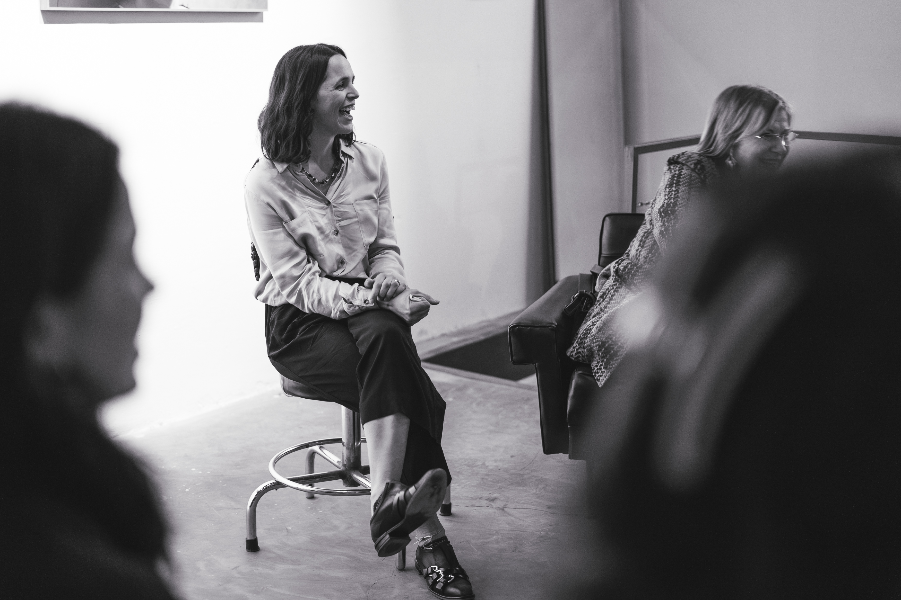
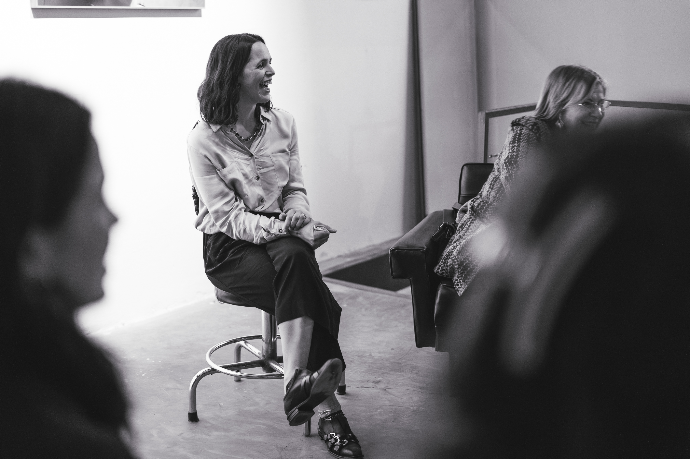
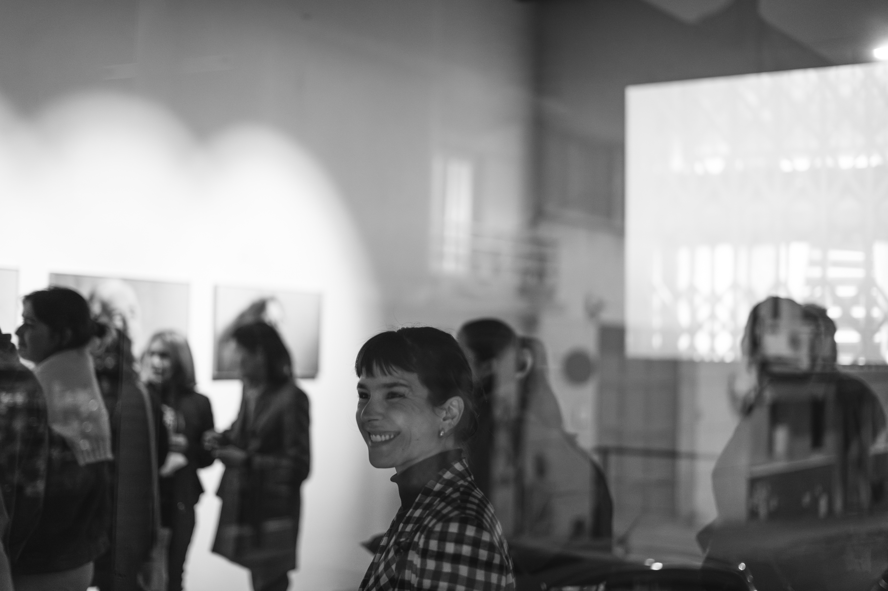
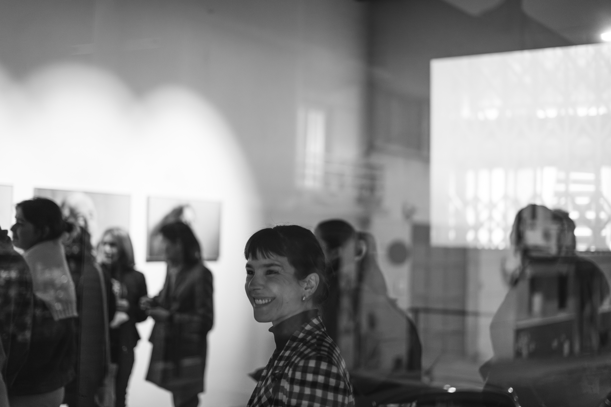
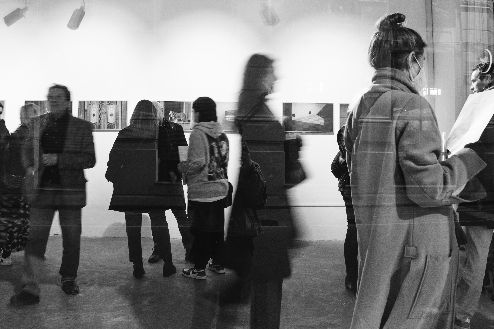
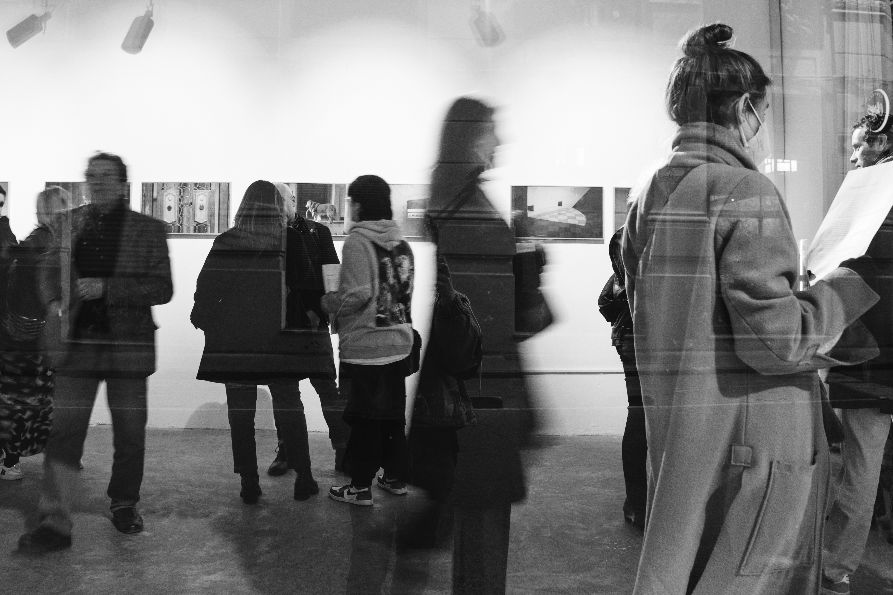
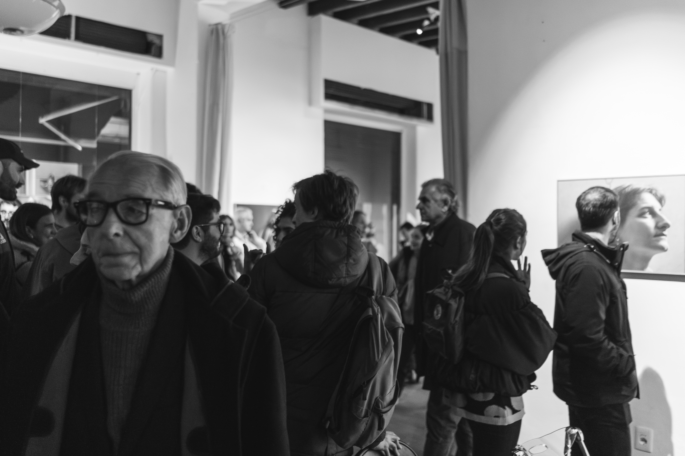
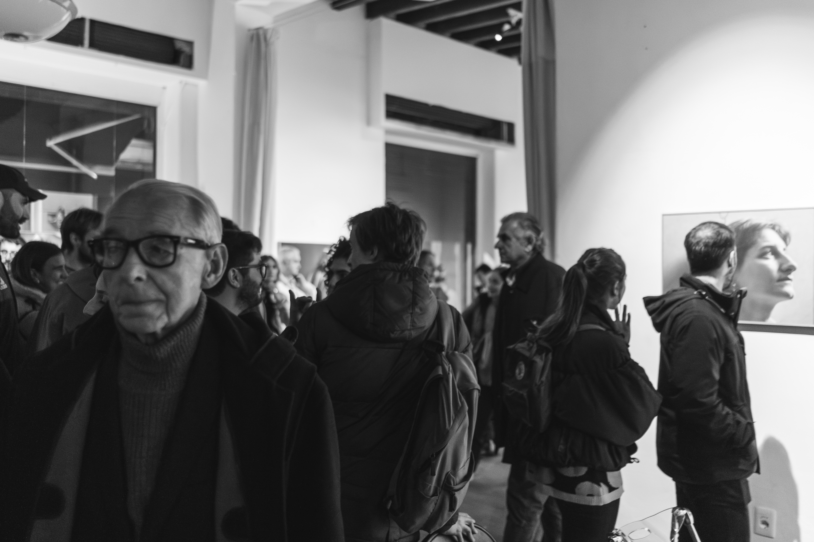

 


 



 


Fotografía de: Lu Lee (@lu.lul)
Fechas de exhibición
- 4 y 5 de AGO en CASA HUNGRY de Hungry Art.
Participación de Alicia Migdal y Alejandro Ferreiro, vecinos del edificio. Acompañan: Cardinalis, Obrador, Bodega Bouza.
- SET y OCT:CULTURAL OBRA (BMR y estudio Rener).
- 3 al 17 de NOV : SALA 2 de Antigua estación de ANCAP, Maldonado, Punta del Este.
“El Naufragio del Tiempo” cuenta con el apoyo de los fondos concursables para la cultura, seleccionado en 2022 bajo la categoría fotografía emergente.
Agradecimientos: Catalina Bunge, Tali Kimelman y Lucia Bruce (Laboratorio de la Mirada), Camila Amelotti, Andrés Henon, Alicia Migdal, Alejandro Ferreiro, vecinos de “El Mástil”, Camila Morales, Darío Invernizzi, Alexis Magnone, Mauri Castro, Ministerio de Educación y Cultura, Casa Hungry Art de Hungry Art, Cultural Obra (BMR Productora cultural & Estudio Rener), Martín Ferrairo, Pedro Duarte, Lucía Lee, Intendencia de Maldonado.